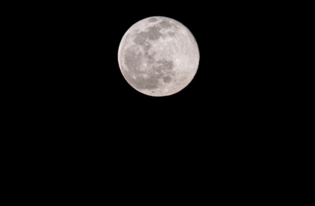
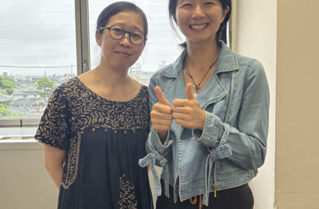
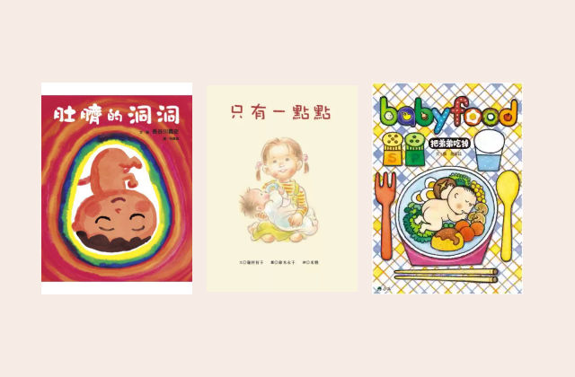
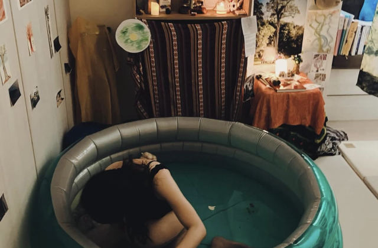
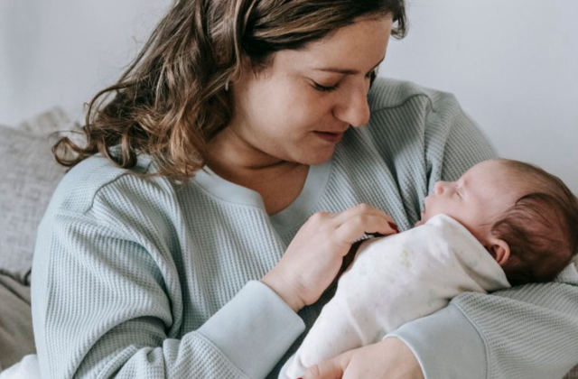

文章 · Articles
把實證研究、真實的陪伴經驗，和身心靈整合的視角揉在一起。
不急著給答案，但每一個說法都會告訴妳它從哪裡來。

白俄羅斯人、住過印度與馬爾他、現居台灣，而且用中文教學。她讓我看見：讓人敢敞開，不是天賦，是手藝。
讀這篇 →她不說 contractions，她說 expansions——因為身體不是在收縮，是在打開。她的巴勒斯坦祖母在村落的生產小屋裡生下九個孩子。
讀這篇 →
「催產素，是一種害羞的荷爾蒙。」Doula UK 第一位日本籍導樂，陪伴超過 300 場生產——曾經是 Vogue 的攝影師。
讀這篇 →
查完 11 本我才發現問錯了問題——中文繪本不是只畫醫院，是根本不畫生產。依孩子現在的狀態分類。
讀這篇 →把十二種並排，看起來像十二個平等的選項——它們並不平等。每一種都標明證據站在哪裡，包括「零研究」。
讀這篇 →溫柔生產的六位奠基作者，繁體中文譯本零本。所以這份書單混編三種語言，照妳現在的狀態分。
讀這篇 →
幾乎每個數字都往好的方向走，只有一項風險上升——而那一項，很可能跟「妳的接生者熟不熟」有關。
讀這篇 →一份整理，不是一份主張。詞彙怎麼分、研究知道什麼與不知道什麼、台日處境有何不同——每個說法都標了證據層級。
讀這篇 →
十年之間台灣的新生兒少了三成，由助產師接生的孩子卻從 95 人變成 299 人。這不是錯覺。
讀這篇 →這個分類還沒有文章。
還在猶豫，要怎麼生？
《生產方式選擇手冊》用 A·B·C 三步驟，陪妳釐清自己的生產信念、想要的生產地點，以及怎麼選擇生產隊友。免費線上閱讀。
翻開手冊 →